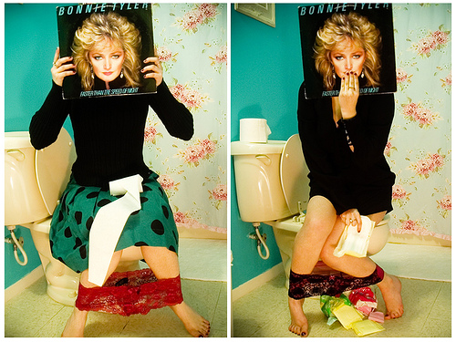

ᠰᠤᠳᠤᠯᠭᠠᠨ ᠤ ᠲᠡᠮᠳᠡᠭᠯᠡᠯ

ᠢᠷᠡᠵᠦ ᠵᠦᠭᠡᠷ ᠯᠡ

《 ᠶᠡᠬᠡ ᠰᠤᠷᠲᠠᠬᠤᠢ
ᠪᠡᠷ ᠠᠮᠲᠠᠲᠤ ᠢᠳᠡᠭᠡᠨ ᠦ ᠰᠣᠨᠢᠨ ᠦᠵᠡᠭᠳᠡᠯ ᠢ ᠡᠭᠦᠰᠭᠡᠬᠦ ᠡᠰᠡᠬᠦᠯᠡ ᠪᠠᠭᠲᠠᠭᠠᠮᠵᠢᠲᠤ ᠬᠡᠯᠪᠡᠷᠢ ᠂ ᠨᠤᠲᠤᠭ ᠤᠨ ᠦᠨᠦᠷ ᠠᠮᠲᠠᠲᠤ ᠵᠠᠭᠤᠰᠢ ᠪᠠᠷ ᠬᠣᠭᠣᠯᠠᠯᠠᠬᠤ
ᠲᠤᠰ ᠨᠤᠮ ᠢᠶᠠᠨ ᠬᠦᠩᠭᠠᠵᠠᠯᠽᠠᠨ1247 ᠤᠨ ᠳᠤ ᠮᠤᠩᠭᠤᠯ ᠭᠠᠵᠠᠷ ᠬᠦᠷᠴᠦ ᠢᠷᠡᠭᠡᠳ ᠬᠦᠳᠡᠨ ᠨᠤᠶᠠᠨ ᠲᠠᠢ ᠵᠤᠯᠭᠠᠭᠰᠠᠨ ᠠᠴᠠ ᠬᠤᠢᠰᠢ1251 ᠤᠨ ᠳᠤ ᠨᠠᠰᠤ ᠪᠠᠷᠠᠬᠤ ᠪᠣᠯᠲᠠᠯᠠᠬᠢ ᠳᠦᠷᠪᠡᠨ ᠵᠢᠯ ᠦᠨ ᠬᠤᠭᠤᠴᠠᠭᠠᠨ ᠳᠤ ᠪᠢᠴᠢᠭᠰᠡᠨ ᠪᠢᠯᠡ᠃
ᠠᠷᠭᠠ ᠪᠠᠶᠢᠳᠠᠭ ᠦᠭᠡᠢ ᠶᠤᠮ》 ᠭᠡᠵᠦ ᠪᠢᠲᠡᠭᠦᠦ ᠳᠦ ᠪᠡᠨ ᠬᠡᠯᠡᠵᠦ ᠪᠠᠶᠢᠭᠠ ᠤᠬᠠᠭᠠᠨ ᠲᠠᠢ᠂ ᠰᠠᠨᠳᠠᠯᠢ ᠶᠢ ᠠᠪᠤᠯ ᠦᠭᠡᠢ ᠵᠤᠳᠬᠠᠨ ᠤ ᠬᠥᠪᠡᠭᠡᠭᠡᠨ ᠲᠤᠰᠢᠶᠠ
ᠶᠢᠨ ᠲᠤᠬᠠᠢ ᠭᠦᠨᠵᠡᠭᠡᠢ ᠰᠡᠳᠬᠢᠵᠤ᠂ ᠥᠭ᠍ᠭᠦᠭ᠍ᠳᠡᠭ᠍ᠰᠡᠨ ᠮᠠᠲᠸᠷᠢᠶᠠᠯ ᠢᠶᠠᠷ ᠯᠠᠪᠯᠠᠯᠲᠠ ᠪᠣᠯᠭᠠᠵᠤ᠂ ᠪᠤᠲᠠᠲᠠᠢ ᠲᠠᠢ ᠤᠶᠠᠯᠳᠤᠭᠤᠯᠤᠨ᠂ ᠥᠪᠡᠰᠦᠪᠡᠨ ᠬᠠᠷᠠᠭᠠᠰᠤ
ᠰᠠᠨᠰᠺᠷᠢᠲ ᠬᠡᠯᠡᠨ ᠦ ᠰᠤᠪᠸᠠᠰᠢᠳᠠ ᠭᠡᠬᠦ ᠦᠭᠡ ᠶᠢᠨ ᠠᠪᠢᠶᠠᠴᠢᠯᠠᠭᠰᠠᠨ ᠳᠠᠭᠤᠳᠠᠯᠭᠠ᠃ ᠲᠡᠭᠦᠪᠦᠷᠢ᠂ ᠡᠮᠬᠢᠳᠬᠡᠯ ᠭᠡᠬᠦ ᠤᠳᠬᠠ ᠲᠠᠢ᠂ ᠡᠮᠦᠨᠡᠬᠢ ᠨᠣᠮ ᠢᠶᠠᠨ ᠬᠡᠯᠡᠵᠦ